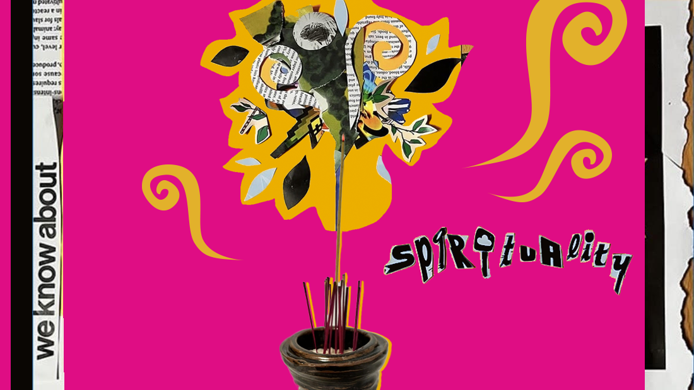
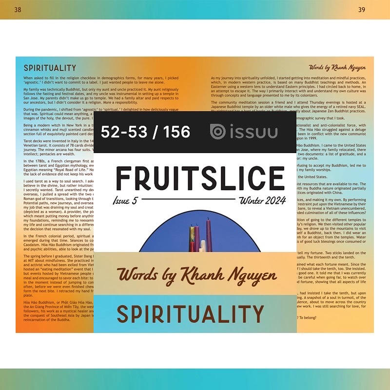

reflections on religion, rituals, and the vietnamese diaspora
tags: buddhism, spirituality, tarot, vietnamese culture, colonialism, rituals
This piece was written during the GWU JMM Fall 2024 Workshop and published in Fruitslice Vol 5: Winter 2024 (digital p 52-53, print p 38-39).

When asked to fill in the religion checkbox in demographics forms, for many years, I picked ‘agnostic.’ I didn’t want to commit to a label. I just wanted people to leave me alone.
My family was technically Buddhist, but only my aunt and uncle practiced it. My aunt religiously follows the fasting and festival dates, and my uncle was instrumental in setting up a temple in San Jose. My parents didn’t make us go to temple. We had a family altar and paid respects to our ancestors, but I didn’t consider it a religion. More a responsibility.
During the pandemic, I shifted from ‘agnostic’ to ‘spiritual.’ I delighted in how deliciously vague that was. Spiritual could mean anything, a different way of not committing. It could conjure up images of the holy, the devout, the pure. I knew the truth, and it amused me: I was a witch.
Being a modern witch in New York in a time of dark academia was quite easy. trader joe’s cinnamon whisks and muji scented candles. Almost every bookshop worth its black salt had a section full of exquisitely painted card decks used for divination: a buffet to dive into.
Tarot decks were invented in Italy in the 1430s. The standard modern tarot deck is based on the Venetian tarot. It consists of 78 cards divided into two groups. The major arcana spans a lifetime journey. The minor arcana has four suits. Wands are ambitions; cups are emotions; swords are intellect; pentacles are wealth.
In the 1780s, a French clergyman first assigned meaning to tarot cards. He created a link between tarot and Egyptian mythology, even claiming that the word was derived from ancient Egyptian meaning “Royal Road of Life.” None of these claims were ever substantiated, though the lack of evidence did not keep his work from spreading like cards.
I used tarot as a way to soul search. I asked the deck questions that I grappled with. I didn’t believe in the divine, but rather intuition: whatever card was pulled would guide me on what I secretly wanted. Tarot unearthed my deepest desires. When I got into the Masters program overseas, I pulled a spread with the two of wands. The card showed a two-faced Janus, the Roman god of transitions, looking through the doorway back at the past and towards the future. Potential paths, new journeys, and overseas travel. When I was trying to decide if I should leave my job that was draining my soul and creative energy, my spread included the king of pentacles (depicted as a woman). A provider, the pinnacle of success. Except: the card was in reverse, which meant putting money before anything else or being stuck in a dull rut. That shook me to my foundations, reminding me to reexamine my priorities. The cards didn’t tell me to uproot my life and continue searching in a different place, but they reassured me that I was following the decision that resonated with my soul.
In the French colonial period, spiritual activities flourished in Vietnam. Two new religions emerged during that time. Séances to communicate with the dead led to the formation of Caodaism. Hòa Hảo Buddhism originated from a founder believed to possess miraculous healing and psychic abilities, able to look at the past and the future. Janus, through the doorway.
The spring before I graduated, Sister Dang Nghiem, a Buddhist nun, came to lecture to students at MIT about mindfulness. She practiced in the tradition of Thích Nhất Hạnh, a Buddhist monk and activist who had been exiled from Vietnam before the war. The day after the lecture, she hosted an “eating meditation” event that I attended. I did not consider myself a Buddhist then, but events hosted by Vietnamese people of renown were rare. The attendees were served a meal and encouraged to savor each bite: to think about what they were eating and to be present in the moment instead of jumping to consider the next spoonful. The nun pointed out that often, before we were even finished chewing, our hands would grasp the utensil and already form the next bite. I retracted my hand from my fork, letting the tines fall softly back to the plate.
Hòa Hảo Buddhism, or Phật Giáo Hòa Hảo, was founded in 1939 by Huỳnh Phú Sổ. It rose from the An Giang Province of Miền Tây, the western region of the Mekong Delta. He quickly amassed followers, his work as a mystical healer and his prophecies on the outbreak of world war II and the conquest of Southeast Asia by Japan leading to his success. He proclaimed himself as the reincarnation of the Buddha.
As my journey into spirituality unfolded, I started getting into meditation and mindful practices, which, in modern western practice, is based on many Buddhist teachings and methods. An Easterner using a western lens to understand Eastern principles. I had circled back to home, in an attempt to escape it. The way I primarily interact with and understand my own culture was through concepts and language presented to me by its colonizers.
The community meditation session a friend and I attend Thursday evenings is hosted at a Japanese Buddhist temple by an older white male who gives the energy of a retired navy SEAL. My nightstand has a host of books on Buddhism, mostly about Japanese Zen Buddhist practices.
As an experiment, I marked ‘Buddhist’ on the last demographic survey that I took.
Huỳnh Phú Sổ and his followers became a key nationalist and anti-colonialist force, with strong sentiment against the colonial French rulers. The Hòa Hảo struggled against a deluge of persecutors. Since the fall of Sài Gòn, they have been in conflict with the new communist government, which only recognized the Hòa Hảo religion in 1999.
I was born in the same region that gave birth to Hòa Hảo Buddhism. I came to the United States the same year that it was officially recognized. In San Jose, where my family relocated, there is a temple for the branch Hòa Hảo. On its walls are two documents: a list of gratitude, and a deed. Both documents feature the name of the realtor: my uncle.
My journey into spirituality, which began with me refusing to accept my Buddhism, led me to tarot and fortune telling – the origins of the sect that my family worships.
Vietnam was colonized by China, France, Japan, and the United States.
I am learning in English, using mostly Japanese Buddhist resources that are available to me. The tarot that led me to my decision to better engage with my Buddha nature originated partially with the French, and Vietnamese fortune telling practices originated with China.
I am infusing new meaning into their words and practices, and making it my own. By performing this colonization in reverse, am I undoing the layers of restraint put upon the Vietnamese by their oppressors? Would it ever be possible to strip all that bare, to reveal a Vietnam unencumbered, and free? Is Vietnam only possible because of the blended culmination of all of these influences?
In San Jose this past Tết, I joined in my aunt’s tradition of going to the different temples to seek blessings. We first visited the temple of our family’s religion. We then visited other popular Vietnamese-Chinese temples in San Jose. The next day, we drove up to the mountains to visit the grand temple there. I still did not consider myself a Buddhist, back then. I did wear an áo dài, and bowed and prayed at the altars, and thỉnh for an object from the temples. Water bottles and tangerines and beaded bracelets, symbols of good luck blessings once consumed or worn.
At the last temple, I threw moon dice and sticks to tell my fortune. Two sticks landed on the ground, though you were only meant to have one, usually. The thirteenth and the tenth.
Next to the platform were pieces of paper that explained what each fortune meant. Since the thirteenth fell out first, I took it, and asked my mom if I should take the tenth, too. She insisted. The thirteenth was a peaceful fortune, though not a good one. It told me that I was currently in a difficult, tumultuous situation. It warned me to be careful when going far, to watch over finances and new people I met. The tenth was a good fortune, showing that all aspects of life had been achieved: family well, fortunes secure.
I could see why my mom, worried about my future, had insisted I take the tenth, but upon rereading the fortunes, the thirteenth was more telling. A snapshot of a soul in turmoil, of the search not being finished. I was in a period of turbulence, about to move across the country again to seek change and to chase the potential of new work. I was still searching for love, for deeper friendships, for meaning, for myself.
What does it mean to be Vietnamese? To be Buddhist? To belong?
